Корпус текстов песен рэпера Pharaoh
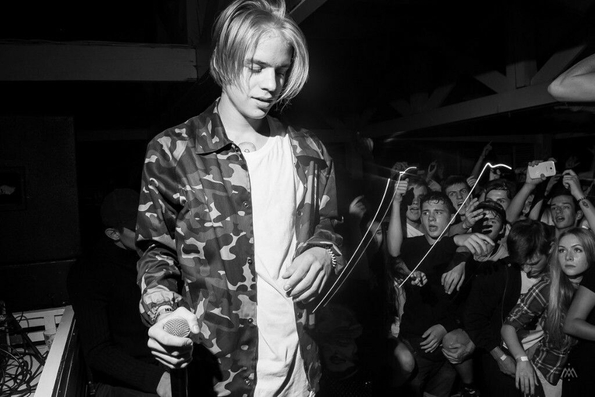"Я совершил революцию в стране и поменял культуру" — Глеб Голубин в интервью Harper's Bazaar
Mystem
Текст, лемматизированный в программе Mystem
AntConc
Частотный список слов
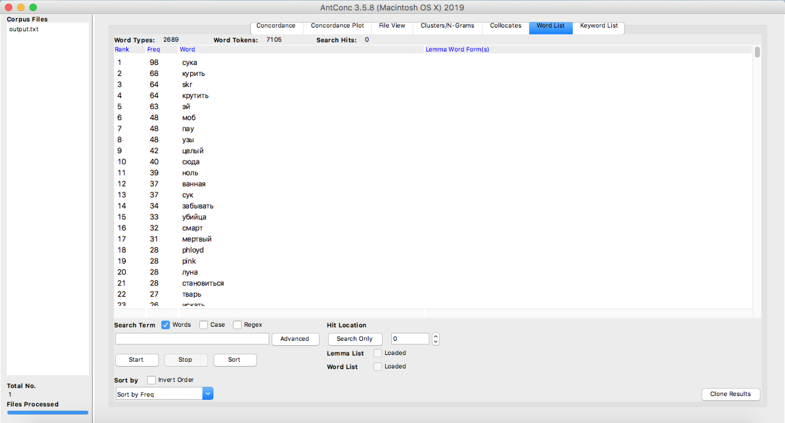Конкордансы 10 самых популярных слов
- с*ка 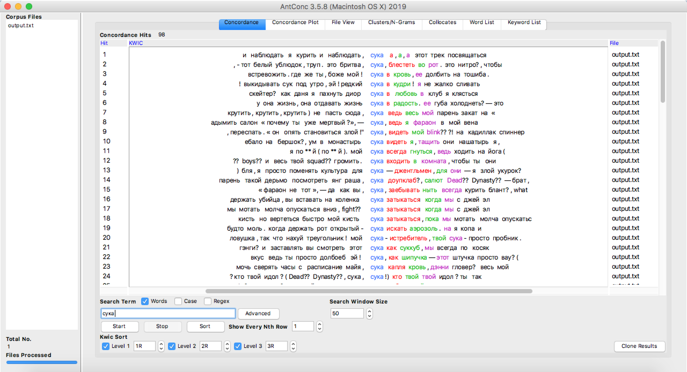
- курить 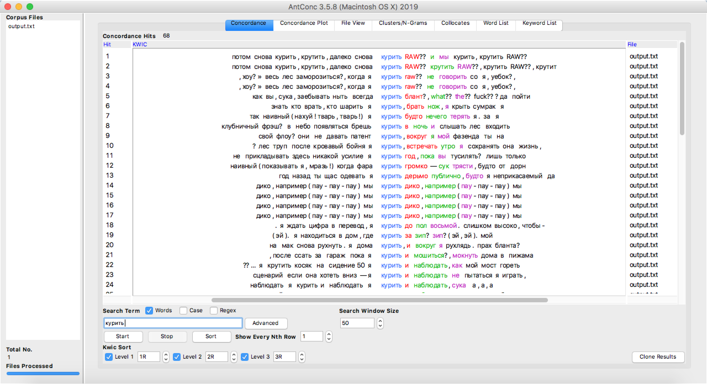
- skr 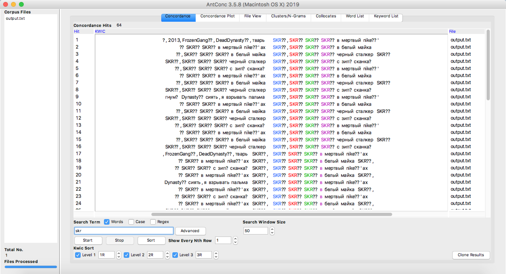
- крутить 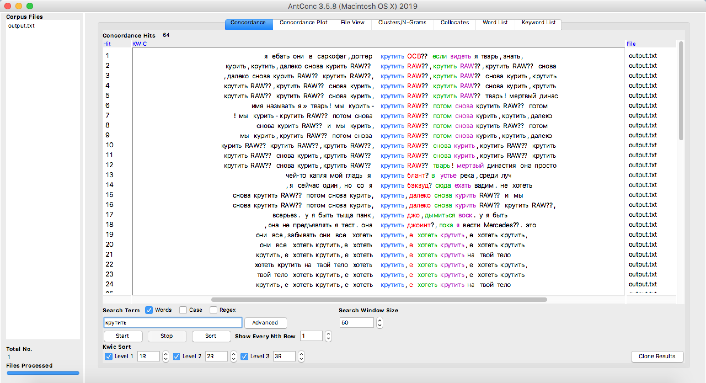
- эй 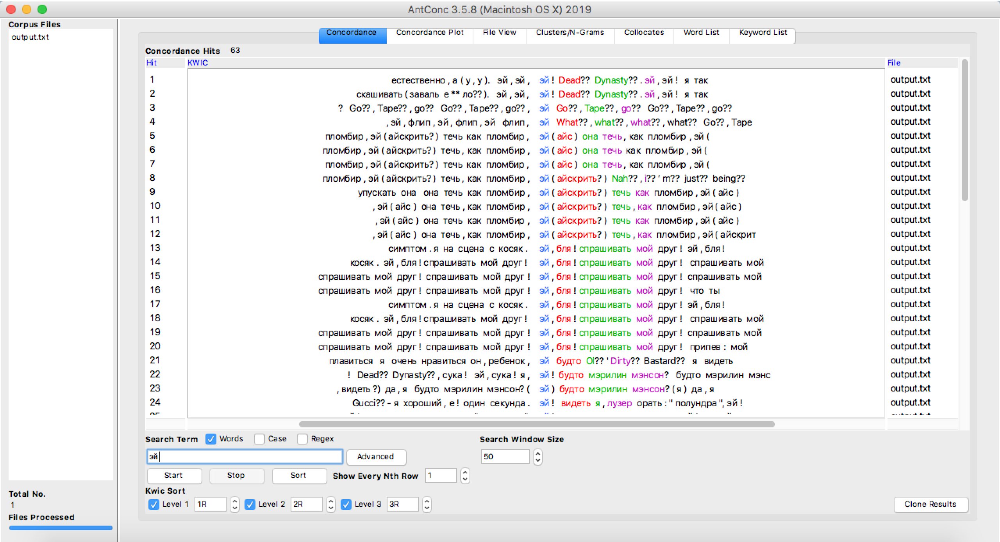
- моб 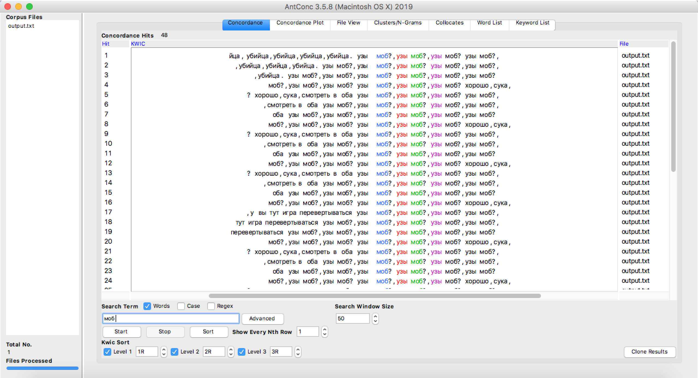
- пау 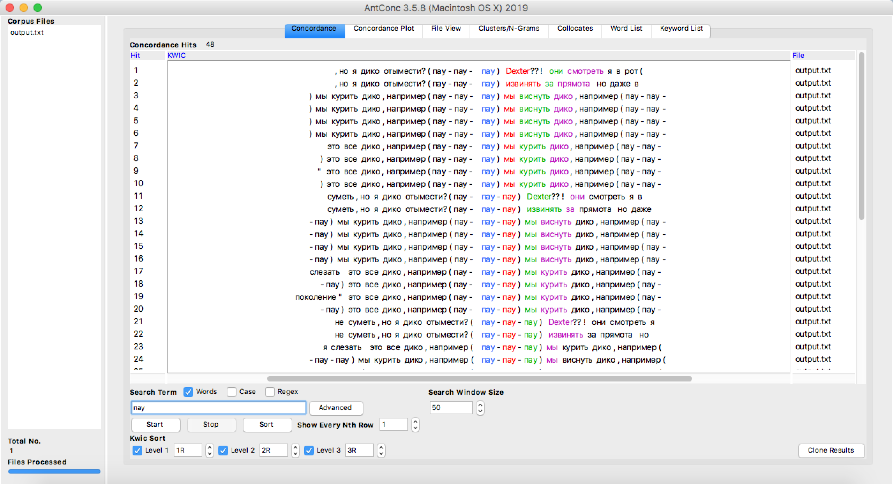
- узы 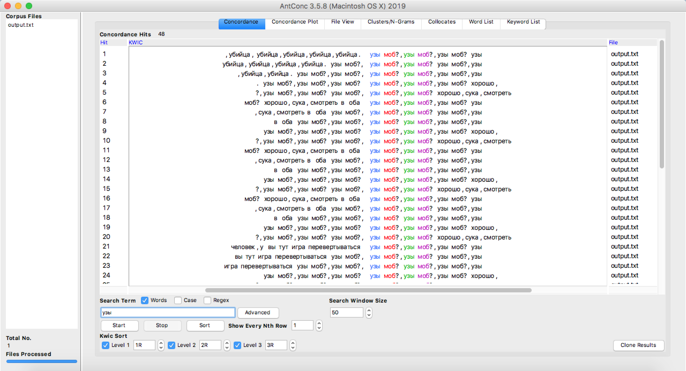
- целый 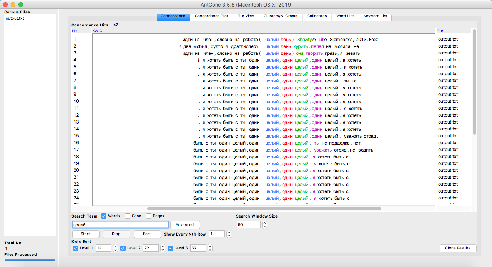
- сюда 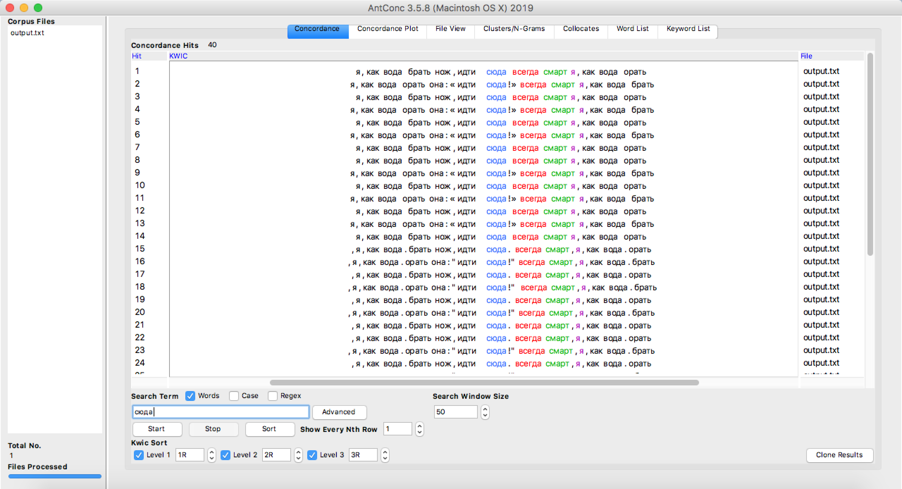
Voyant Tools
Основные характеристики корпуса

Облака слов


Тренды

Наблюдения:
Наблюдения:
- Общее количество слов в корпусе — 16 744, из них уникальных словоформ (если словоформа встречается в тексе два и более раза, она считается один раз) — 4 110 слов
- Больше всего слов Pharaoh написал в 2018 году: 4502 слова — больше 1/4 от общего объема корпуса; меньше всего слов написано в 2016 году (2485 слов)
- При этом самые высокие показатели vocabulary density (относительная единица расчёта разнообразности словарного запаса) характерны для 2014 (начало творчества) и 2016 (наименьшая продуктивность) годов, а самые низкие показатели — в 2018 году (наибольшая продуктивность)
Вывод: при наибольшей продуктивности качество его треков ухудшается – рэпер использует намного больше повторов, нежели оригинальных идей и уникальных словоформ.
Вывод
Облака слов и word list в AntConc иллюстрируют, что лексика рэпера Pharaoh не слишком разнообразна, а его синглы по тематике схожи с треками других представителей рэп-коммьюнити. Исполнитель пишет о деньгах, женщинах, любви, тусовках и популярности. Примечательно, что для его текстов характерны частые повторы слов, отдельных фраз и звуков. Чем больше треков было выпущено за год, тем менее оригинальный лексический состав текстов. В начале его карьеры продуктивность рэпера была очень высокая: тогда появились и его самые известные треки – «5 минут назад», «Champaigne Squirt» (2014). При этом отмечается самый низкий показатель Vocabulary Density, в то время как в 2016 году (наименьшая продуктивность, период отношений и влюбленности) эти показатели самые высокие за весь период творчества. Из этого можно сделать вывод, что чем меньше треков рэпер выпускает, тем тщательнее он работает над смысловым наполнением текстов.